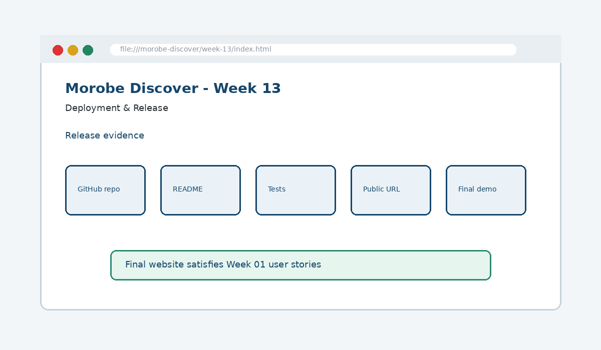

Deployment & Release
Publish a production-ready website to a live public URL.

How this week's learning connects
1. Reading
Build the conceptual foundation and vocabulary for Deployment & Release.
2. Lecture
Inspect the core principle, code patterns and visible browser result.
3. Lab
Complete the guided build tasks with checkpoints, testing and Git evidence.
4. Morobe Discover
Integrate the result into the same project and preserve earlier features.
README
Documents purpose, structure and running instructions.
Git history
Provides traceable evidence of progress.
Deployment
Reveals path, asset and integration issues that local testing can miss.
Read the code line by line
git add .
git commit -m "Week 13 final release"
git push origin mainRepository → Settings → Pages
Source: Deploy from a branch
Branch: main / (root)What it does → Why it works → Where we use it
git add .
Stages changed project files for the next commit.git commit -m
Creates a named checkpoint in project history.git push origin main
Sends local commits to the main branch on GitHub.Settings → Pages
Opens the GitHub Pages publishing configuration for the repository.
Project connection: This code belongs to the Week 13 Morobe Discover increment and should produce a visible or testable change related to Published GitHub Pages site, final README, test evidence and demonstration.
Editable browser playground
Modify the example, run it, break it deliberately, and reset it. The preview is isolated from the course page.
Morobe Discover tasks
- Finish README and run instructions
- Check final file paths and assets
- Push final code to GitHub
- Enable GitHub Pages
- Prepare a user-journey-based demonstration
Checkpoint tests
Morobe Discover — Week 13
This is the actual source project increment supplied for this week.
Check your understanding
Knowing the definition is not enough
A weak submission can define Deployment & Release but cannot point to the exact Morobe Discover file, code line and browser result. During code defence, be ready to connect code → visible behaviour → user reason → test evidence.
Prepare the next checkpoint
Final demo and code defence: explain how the project satisfies the original user stories.